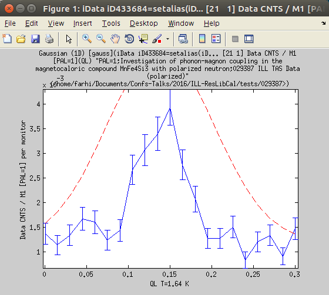
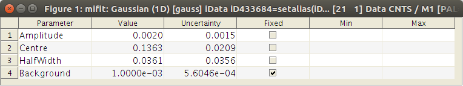
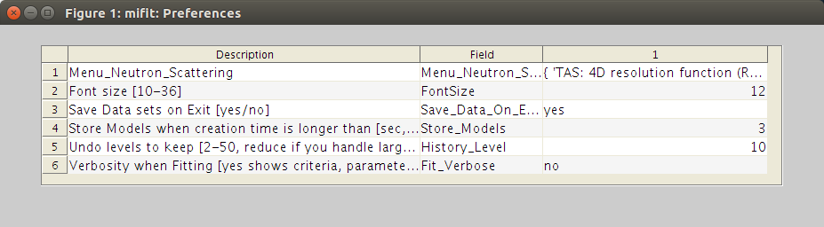

miFit: a user interface for iFit
- Starting
- Using specific miFit flavor
- Loading data and models
- from files
- from the Matlab/iFit prompt:
Data sets
- from the Matlab/iFit prompt:
Models
- from copy/paste
- from drag-and-drop
- creating a new Data set
- creating new Models
- Working with Data sets
- Plotting data
- Sorting and searching data
- Mathematical operators on Data
sets
- Working with Models (fitting)
- Assigning and Evaluating Models
to Data sets
- Selecting a fit routine
(optimization algorithm)
- Fitting Models to Data sets
- Preferences
- Resetting miFit (default
Preferences)
- Saving your work
- Saving all data sets, Models
and Preferences
- Exporting selected Data sets
- Exporting Models (and importing
them as well)
- Examples
- Fitting a simple peak
- Fitting a powder pattern
- Fitting a spin-wave dispersion
- Fitting a phonon dispersion
(neutron_TAS)
This is the miFit help, a simple graphical user interface to iFit.
To access the main iFit help pages, click here.
Starting
To start the miFit interface, just type 'mifit' from
the Matlab prompt when iFit is installed, or from the iFit
stand-alone prompt. The main window will then appear, as follows:
 The miFit main window
The miFit main window
The main window has menus, a toolbar with icons, and tips that show
up when bringing the mouse pointer over items. The imported data
sets are stored in a 'Data Sets' list.
On the first start-up, miFit builds a list of available
Models and Optimizers. This list can be re-built (updated) if you
reset the application from the Reset item in the File menu.
Before you reset miFit, it may be desirable to save your Data Sets.
Using specific
miFit flavor
miFit can be customized to provide specific features, from the Configurations
item in the File menu. Each configuration is an ini file
stored in the iFit/Applications/miFit/configurations
directory. You may add your own configurations there, based on the
existing ones. Selected configurations are appended to the current
Preferences, and saved for later use. They mostly populate new menu
items. In order to remove specific configurations from miFit, you
should Reset miFit as indicated below.
- neutron_TAS: add a Neutron Scattering menu with
4D TAS resolution calculation and convolution. See below for an example usage.
Loading data and models
The imported Data Sets appear in the main miFit list.
The imported Models are inserted in the Models menu,
sorted by dimensionality (1D, 2D, 3D, 4D, others).
from files
The legacy way to import data files into miFit is to select the Open
item in the File menu. A file selector will pop-up, and
allow to select one or more data files (use Ctrl-click to select
files one-by-one, and Shift-click to select a range). You can
equally select the Open icon in the toolbar.
It is possible to import data files in any supported format
(whole list available in the Loaders
page). Once loaded, the data sets appear in the Data Sets list in
the main window.
Supported formats for Data Sets (stored as iData
objects):
- any Data in text format
- ILL Data (legacy, text, most instruments at the ILL)
- ILL TAS Data (legacy, text, polarized or not)
- ILL Cyclops neutron
Laue diffractometer image (HBIN)
- Chalk River CNBC NRU data,
including multi-wire and polarized data
- SPEC ESRF
- McStas (Scan DAT
output, 1D, 2D monitor, event lists, sim file, Sqw,
LAZ, LAU tables)
- ISIS/SPE and SQW tof data (see Horace and LibISIS)
- INX tof data (ILL processed
TOF)
- ESRF data format (*.edf)
- Xray/neutron diffraction Crystallographic
binary file (*.cbf)
- MRI
3D volume Analyze
7.5 (*.hdr with associated *.img)
- NifTI medical
imaging volume data format (*.nii)
- NeXT/SUN (.au) sound
- Microsoft WAVE (.wav) sound
- Audio/Video Interleaved (*.avi)
- NetCDF (*.nc)
- CDF (*.cdf)
- FITS (*.fits)
used in astronomy
- Microsoft Excel (*.xls)
- Image/Picture (*.gif, *.bmp, *.tif, *.jpg,
*.png, ppm, pgm, pbm)
- HDF4 (*.hdf4)
- HDF5 (*.hdf5)
including the NeXus format
(*.nx, *.n4, *.ns, *.n5, *.nxs) and more specifically Mantid workspaces.
- Matlab workspace (*.mat) a customized HDF
- Comma Separated Values (*.csv)
- Numerical single block (*.dlm)
- XML (*.xml)
- FIG (Matlab figure, *.fig)
|
- Protein Data
Bank (*.pdb)
- STL stereolithography
(*.stl)
- OFF object
geometry (*.off)
- PLY Polygon
File Format or the Stanford Triangle Format (*.ply)
- MAR MarResearch
CCD Camera (*.mar, *.mccd), a variant of the TIFF
format
- SIF Andor SIF
CCD Camera (*.sif)
- SPE Princeton/Roper
Scientific WinView CCD / PI Acton Camera file (*.spe)
- IMG ADSC
Quantum CCD Camera (*.img)
- CIF, CFL/PCR, INS/RES/SHX Crystallography
files (FullProf, ShelX)
- EZD, MRC and CCP4 electron
density maps (*.map, *.ezd, *.ccp4)
- YAML and JSON (*.yaml,
*.yml, *.json)
- NMR Bruker, Varian and JEOL data files
- IBW Igor Wave
data file (*.ibw)
- OBJ Wavefront
3D (*.obj)
- LabView LVM and TDMS files
(*.lvm; *.tdms)
- Bruker FT-IR OPUS data
files (*.0001, *.0002, ...)
- LLB TAS binary data files (R* and C*)
- IDL SAV data
(*.sav)
- DAT Quantum
Design VMS
ppms/mpms
- XVG XmGrace data set
- Agilent Mass Spectrometry (*.CH, *.D, *.MS)
- Thermo Finnigan Mass Spectrometry (*.RAW)
- ENDF Evaluated
Nuclear Data File (*.endf,*.tsl)
- ACE MCNP files
(*.ace) [requires PyNE]
|
Supported formats for Models (stored as iFunc
objects):
- M Matlab script/function (*.m)
- MAT Matlab binary file (*.mat)
- JSON JavaScript Object Notation (*.json)
- YAML interchange format (*.yaml)
- XML file (*.xml)
from the Matlab/iFit prompt: Data sets
It is possible to work from the Matlab/iFit prompt, and send any numerical array, as well as iData (data sets) and iFunc (models) objects. This is done with the mifit(data) command. Any syntax from the Load page can be used, where 'mifit' stand in place of 'iData'.
To import a numerical array: mifit(array)
")
a=rand(10);
mifit(a);
or mifit(x,y,z, ... signal)
x = 0:.1:8*pi; y = sin(x);
mifit(x,y);
or
a=[ 0 0
0.1000 0.0998
0.2000 0.1987
0.3000 0.2955
0.4000 0.3894
0.5000 0.4794
0.6000 0.5646
0.7000 0.6442
0.8000 0.7174
0.9000 0.7833
1.0000 0.8415
1.1000 0.8912
1.2000 0.9320 ];
mifit(a);
To import an iData object (data set. Refer to the Load page): mifit(iData)
a = iData(peaks);a.Title = 'Peak function'; label(a,1,'my X axis'); label(a,2,'my Y axis');mifit(a);
from the Matlab/iFit prompt: Models
To import a Model (iFunc object): mifit(iFunc)
f=gauss+lorz; f.Background_2=0; fix(f,'Background_2');mifit(f);
The new model is added to the 1D Models menu, as a blue entry, which is used to label 'user' models. Such models are 'static' in the sense that once in the Models menu only their model parameters can be changed. These models are assigned a unique iD in the form iFxxxx.
It is also possible to add Models as expressions, which are then evaluated to create a model. Such models, shown in green in the Models menu, are 'dynamic' in the sense that they are used to effectively create other static models. Such model creators do not have a unique model iD. For instance, the 'sqw_phonons' model is dynamic. When called, it requires to enter parameters to initiate the model creation, such as the DFT code to use, the k-mesk, ... Then, a static model is created, but the parameters used initially (DFT, k-mesh, ...) can not be changed further. However, the model parameters (intensity, ...) can be changed, e.g. during fit processes.
To import a Model expression as a dynamic model (creator), use:
mifit('Models_Add_Entry','gauss+lorz');
from copy/paste
It is possible to use the Copy/Paste mechanism to import data sets. If the copied element is a file, it will be imported the same way as with the Open item above when selecting the Paste item in the Edit menu. You can also click on the grey window background or the 'Data Sets' label above the list, and press Ctrl-V.
You can also copy whole data blocks (e.g. numerical values/array from a text editor or a spreadsheet), and paste them into miFit.
from drag-and-drop
A very convenient way to import data is to drag a data file, and drop it into the miFit window. A new data sets object is then read, and added to the list.
creating a new Data set
You may create a new data set using a spreadsheet by selecting the New item in the File menu, or the white page icon in the toolbar. Type in your data (Copy/Paste works). The data set will be imported into miFit when you close the window.
creating new Models
The way to define new Models into miFit is via the Matlab/iFit prompt (see above), or by importing a data file containing a model (iFunc) definition.
Working with Data sets
You should first import or create Data Sets (see above), which populate the miFit list. Each entry is an iData object.
Most actions require to select one or more Data Sets from the list. You can use the mouse click, with the Ctrl key for adding one-by-one, or the Shit key to add in a range. The Select All item in the Edit menu allows to select all, or none (when they are all selected). To deselect a single item, use mouse Ctrl-click on it. You can use Ctrl-A to select all.
Subsequent Data Sets states are saved into a History, which allow to Undo last operations (data states, model selections, etc...). You may as well save any time the miFit state from the Save as item in the File menu.
Plotting data
You can plot Data Sets by selecting one or more, and then click on the Plot icon in the toolbar, or the Plot item in the Data menu. To plot a single Data Set, double-click it in the Data Set list. Data Sets with assigned Models (see below) will also show the model evaluation.
Sorting and searching data
Once you have imported or created many Data Sets, it is desirable to be able to sort them, or to find some that match given criteria.
The Sort List item in the Data menu allows to sort the Data Sets according to a given criteria, such as the integrated value, the Date, the title, its unique iD, its size (number of elements).
The Search item in the Data menu allows to enter a token/word to be searched in the data sets. Those matching the token will then be selected. You can then use the above Sort List item to move these at the top or bottom of the Data Set list.
Mathematical operators on Data sets
It is possible to apply simple mathematical operators onto one or more Data Sets.
- Unary: these operators take single data sets, and return the same number of data sets after the transformation, which are appended to the Data Sets list. You can find typically: log, abs, trigonometric, opposite (uminus), ...
- Binary: these operators take operators two-by-two and return a single data set, which is appended to the Data Sets list. You can find typically:merge/combine, plus, minus, times, divide, comparisons, interpolation, FFT convolution, ...
- Others: these operators are usually specialized unary operators, and return the same number of data sets as the selected ones, which are appended to the Data Sets list. You can find typically: FFT, smoothing, intergral (trapz), cartesian to spherical/radial (cart2sph), wavelets (cwt), gradient and laplacian (del2), ...
For more complex treatment, you should retrieve the Data Sets in the Matlab/iFit workspace (prompt level), do some work, and send it back as new or updated Data sets. You can refer to the main iFit help page to learn what you can do, especially regarding the iData object handling, and Mathematical operators.
d=mifit('pull')set(d,'Model',gauss);d(1) = d(1)+d(2); % assuming we have selected 2 data sets.mifit('pull' d);
Working with Models (fitting)
You can use the available Models listed in the Models menu, and sorted by dimensionality (1D,2D,...). You may import new models from files (including drag-n-drop), and from the Matlab/iFit prompt (which allows to create new Models). All Models are iFunc objects.
1D models
allometric Allometric/Freundlich (1D) [allometric]
bigauss Bi-Gaussian (1D) [bigauss]
bilorz Bi-Lorentzian (1D) [bilorz]
bose Bose (1D) [bose]
dho Damped-harmonic-oscillator (1D) [dho]
dirac Dirac (1D) [dirac]
doseresp Dose-response (sigmoid) (1D) [doseresp]
expon Exponential decay (1D) [expon]
expstretched Stretched Exponential decay (1D) [expstretched]
gauss Gaussian (1D) [gauss]
green Green function (1D) [green]
heaviside Heaviside (1D) [heaviside]
langevin Langevin function for magnetic polarization (1D) [langevin]
laplace Laplace distribution function (1D) [laplace]
lognormal Log-Normal distribution function (1D) [lognormal]
lorz Lorentzian (1D) [lorz]
maxwell Maxwell-Boltzmann *3 distribution function (1D) [maxwell]
pareto Pareto distribution distribution function (1D) [pareto]
| poisson Poisson distribution function (1D) [poisson]
powerlaw Power law (1D) [powerlaw]
pseudovoigt Pseudo-Voigt (1D) [pseudovoigt]
quadline Quadratic equation (1D) [quadline]
sigmoid Sigmoidal curve (1D) [sigmoid]
sine Sine function (1D) [sine]
sinedamp Damped-Sine function (1D) [sinedamp]
strline Straight-line (1D) [strline]
tophat Top-Hat rectangular function (1D) [tophat]
triangl Triangular function (1D) [triangl]
twoexp Bi-Exponential decay (1D) [twoexp]
voigt Voigt (1D) [voigt]
ff_core_shell Spherical/core shell P(q) (1D) [ff_core_shell]
ff_sphere Sphere P(q) (1D) [ff_sphere]
sf_hard_spheres Hard Sphere S(q) (1D) [sf_hard_spheres]
sf_square_well Square well S(q) (1D) [sf_square_well]
sf_sticky_hard_spheres Sticky Hard Sphere S(q) (1D) [sf_sticky_hard_spheres]
|
2D models
lorz2d Lorenztian-2D function with tilt angle (2D) [lorz2d]
plane2d Planar function (2D) [plane2d]
pseudovoigt2d Pseudo-Voigt-2D function with tilt angle (2D) [pseudovoigt2d]
quad2d Quadratic-2D function with tilt angle (2D) [quad2d]
gauss2d Gaussian-2D function with tilt angle (2D) [gauss2d]
|
4D models
sqw_acoustopt Sqw_acoustopt acoustic/optic dispersion(HKL) with DHO line shape [sqw_acoustopt]
sqw_cubic_monoatomic Sqw_cubic dispersion(HKL) for cubic monoatomic crystal [sqw_cubic_monoatomic]
sqw_linquad Sqw_linquad linear-quadratic dispersion(HKL) with DHO line shape [sqw_linquad]
sqw_sine3d Sqw_sine3d sine dispersion(HKL) with DHO line shape [sqw_sine3d]
sqw_phonons Sqw_phonon DHO [sqw_phonons]
sqw_spinw Sqw_spinw spin-wave dispersion(HKL) [sqw_spinw]
sqw_vaks Sqw_Vaks phonon dispersion(HKL) for perovskites ABX3 [sqw_vaks]
|
Others
constant Constant (0D) [constant]
gaussnd Gaussian (nD) [gaussnd]
ngauss Gaussians_n (n*1D) [ngauss]
nlorz Lorentzians_n (n*1D) [nlorz]
rietveld Rietveld refinement [rietveld]
|
A detailed list of available models is given in the Models page.
Assigning and Evaluating Models to Data sets
You should first select the target Data Set(s) in the list, which will be assigned a given model. Then, select a model from the Models menu (1D,2D, ....).
To view the Model Parameters, select the View Model Parameters item in the Models menu. This window has a contextual menu which provides additional features (on right-click).

The miFit Model Parameters window. You can fix and set parameter bounds.
You can force to evaluate the Model onto selected Data Set axes from the Evaluate Model in the Data menu. When no model parameters have been set yet, the model will guess some starting parameters from the data set.
To force an update of the Parameter Window (with e.g. guessed values), de-select (Ctrl-click or click an other data set) and re-select (click) the Data Set from the list.
Plotting one or mode Data Set with assigned models will also display their model evaluation (see above).
Selecting a fit routine (optimization algorithm)
The default choices for the optimizer and the fit criteria will 'work' in most cases. However, you may specifically select the optimizer, its configuration, the fit criteria and the verbosity level (for interactive actions).
The optimizer to be used for fitting can be chosen from the Optimizers menu. The 'Automatic best optimizer'
(fmin) makes a reasonable choice among all available optimizers,
depending on the model dimensionality. This is the default choice.
However, you may choose any of the available optimizers (see Optimizers for a more detailed description).
- Configuration of the algorithm: The configuration of the optimizer allows to change the internal optimizer parameters, such as the number of iterations, the desired accuracy (convergence criteria), ... The default configuration should work in most cases.
- Selecting the optimization criteria (least-squares, ...): use the Select Criteria entry in the Optimizers menu. Usual choice is least-square, but other choices are possible. Refer to the Fit help page for more.
- Selecting the optimizer: Select one entry in the Optimizers menu.
- The verbose mode: in the Preferences from the File menu, you can turn the Verbosity item from 'no' to 'yes' to follow the fit procedure. During the fil, the criteria evolution, as well as the data and model evaluation plot will displayed. The View Parameters window will also be regularly updated. You can also click the Stop red button during the fit to cleanly interrupt the procedure.
Fitting Models to Data sets
Once a data set has been assigned a model, it is possible to fit the model parameters onto the data. The procedure makes use of the following concepts:
- the model is also called the 'objective' function ;
- the model parameters are changed during the fit procedure so that the model evaluated with these parameters converges as best as possible to the data set. The number of parameters is the problem dimensionality. The number of degrees of freedom is the number of data set points minus the number of parameters ;
- the metric used to compare the data set and the model evaluation during the fit is called the 'criteria' . It is often defined as the least-square, but other choices are possible ;
- the procedure used to perform the fit is called the 'optimizer' (see Optimization). Known optimizers are the Levenberg-Marquardt, the swarm (particules), the simplex, etc...
The fit process is launched when selecting the Fit to Model item of the Data menu, or clicking the fit icon in the toolbar.
The Verbose mode ('yes') in the Preferences allows to follow the fit procedure and to be able to interrupt it cleanly during the fit (Stop button). However, it results in a slightly slower fit, as displaying the updates takes more time.
Preferences

The miFit Preferences window. The Preferences are updated and saved when closing the window. To Reset Preferences, use the File:Reset item.
Resetting miFit (default Preferences)
To Reset the miFit application, use the Reset item in the File menu. The 'Reset' button will clear the data set list, History and Log file. The Factory reset will also clear the Models list (menu), and Preferences. This last choice requires miFit to be restarted in order to be effective. Specific menus from the File:Configurations are also removed.
Saving your work
Saving all data sets, Models and Preferences
Use the Save item in the File menu to save the Data Sets, Models, and Optimizers, e.g. in the mifit.mat file in the Matlab Preferences directory. This file is automatically re-opened when starting miFit, so that the last configuration is fully restored from one session to an other.
You may as well save this information into a specific file, using the Save as item in the File menu. You can then later re-open this file from the Open item in the File menu.
Preferences are saved automatically. They are restored when starting a new miFit session. The location of this file is indicated in the dialog, and in the console. You may make copies of this file for later restore. The Configurations directory in miFit are specific Preferences file (.ini).
Exporting selected Data sets
Into files
To the Matlab/iFit prompt
Copy/Paste
As table
As web pages (for printing)
Exporting Models (and importing them as well)
Examples
Fitting a simple peak
Fitting a powder pattern
Fitting a spin-wave dispersion
Fitting a 'phonon' dispersion (neutron_TAS)
We here indicate the usual steps to be used to treat a TAS scan around a dispersion.
- Import a TAS data file. This is e.g. a Q or Energy scan.
- Install the Neutron Scattering menu with TAS plug-ins but selecting the File:Configurations:neutron_TAS.ini
- Select the data file, and convert it to a 4D (QH QK QL EN) scan, using the TAS: Convert/Convolute 4D item in the Neutron Scattering menu. As there is no Model assigned, only the data set in converted to 4D.
- Assign a 4D model, e.g. sqw_linquad which models a local S(q,w) description around e.g. the scan center.
- Open the View Parameters window by selecting the View Model Parameters item in the Models menu.
- Set initial model parameters (e.g. excitation energy). Make sure to fix e.g. HKL space directions and some other parameters to help the fit to converge. Bound parameters (e.g. excitation energy and Q location...). Adjust Intensity and Width.
- Optionally, turn Verbosity to 'yes' in the Preferences.
- Click on the Fit icon or item in the Data menu. This first fit is an ideal one, without the 4D convolution with the neutron TAS resolution.
- Now, open the ResLibCal interface from the Neutron Scattering menu.
- Optionally import a data file, previous or predefined instrument configuration in ResLibCal to read the spectrometer configuration. This data file should contain Rescal parameters in free text. You can also check/modify instrument and sample parameters in its main window.
- Select the method to compute the resolution from Cooper-Nathans, Popovici or McStas full Monte-Carlo. The resolution uses a Monte-Carlo cloud for the 4D convolution operation which creates a set of points around each TAS measurement location. The resolution
is re-computed at each location. The number of points used in this
cloud is defined in the ResLibCal View:Set Monte-Carlo iterations item.
- In miFit select the 4D data set (QH QK QL EN), and convolve the model with the 4D TAS resolution function, using (again) the TAS: Convert/Convolute 4D item in the Neutron Scattering menu. This time, the assigned model is affected.
- You can optionally close ResLibCal (which saves the current configuration to be used). This makes the fit procedure slightly faster.
- Click on the Fit icon or item in the Data menu.